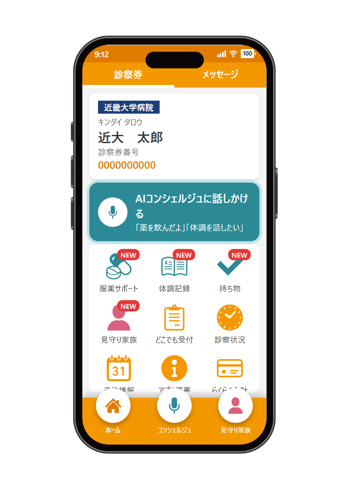
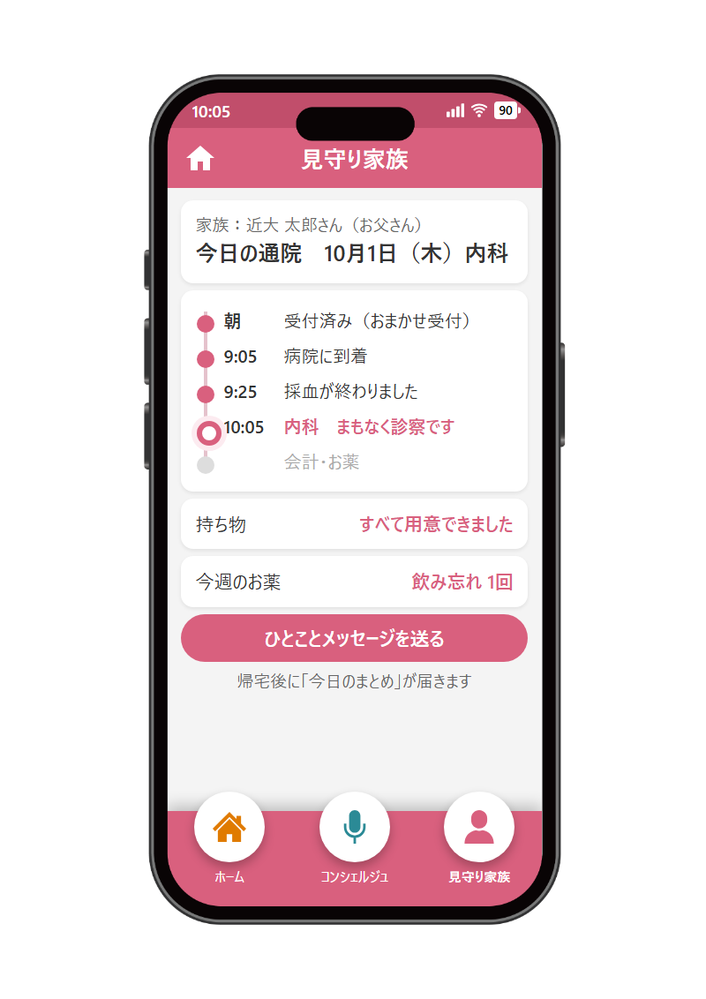
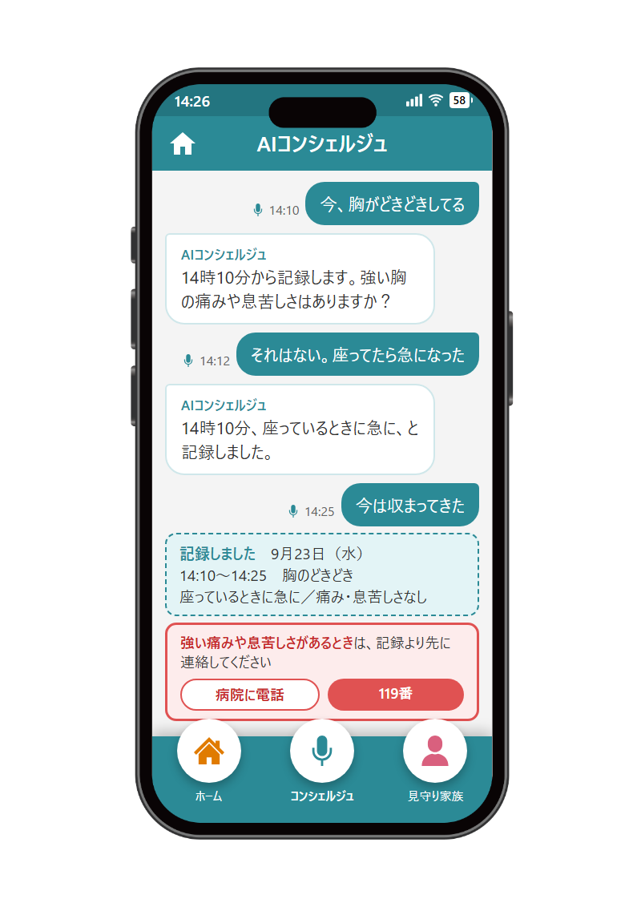
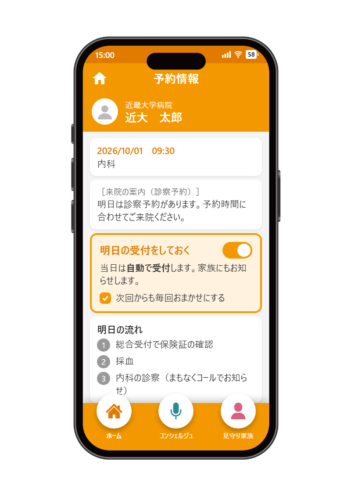

病院の窓口でQRコードが必要。家族を登録するにも本人の同席がいる
「どこでも受付」を自分で操作するのが難しい、忘れてしまう
月1回の通院では、入れておく理由を感じにくい。通知も信頼しきれない
家族が来院せずに登録でき、離れていても「今日、ちゃんと通院できた」が分かる安心を届ける
話しかけるだけで、服薬・症状・受付をまとめて支える
前日に1タップで、当日は自動で受付が済む

招待コードを発行本人が来院した日に、家族用の招待コードを発行する
家族は来院せずに登録LINEやSMSでコードを受け取り、自分のスマホだけで登録できる
通院の様子をリアルタイムで共有呼出・会計・薬の状況が自動で届くから、離れた場所からでも今の様子が分かり、電話で聞かずに済む

服薬サポート薬を飲む時間に声をかけ、「飲んだよ」と話すだけで記録する仕組み
症状の記録・診察前のメモその場で話した症状を記録し、「前回から気になったこと」をまとめる
フッターからどの画面でも呼び出せる操作支援話しかけるだけで、受付や案内も会話の中で済ませられる

前日の通知から1タップ「明日の受付をしておく」を押すだけ
当日は自動で「どこでも受付」朝に自分で操作する必要がなくなる
次回からも自動にできる一度設定すれば、使い続ける努力がいらない

家族登録や通知の仕組み、既存のチャットボットなど、今ある機能を広げる形で実現できると考えています
このアプリは複数の病院で使われる共通基盤。近大病院だけでなく、全国の導入病院にも展開できる改善になる
通院する日だけでなく、ふだんの暮らしの中にもそばにいるアプリへ。